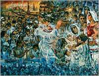
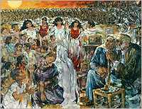
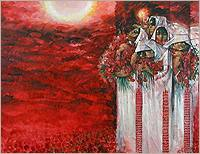
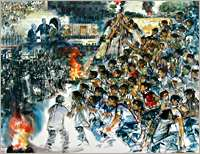

اللوحة:
زيتية، إنتاج عام
1997،
165X200
سم
|

اللوحة:
زيتية، إنتاج عام 1997، 165X200
سم
|

اللوحة:
زيتية، إنتاج عام
1998،
165X200
سم
|

اللوحة:
زيتية، إنتاج عام
1998،
165X200
سم
|

اللوحة:
زيتية، إنتاج عام
1999،
165X200
سم
|

اللوحة:
زيتية، إنتاج عام
1999،
165X200
سم
|

اللوحة:
زيتية، إنتاج عام
1999،
165X200
سم
|

اللوحة:
زيتية، إنتاج عام
1999،
165X200
سم
|

اللوحة:
زيتية، إنتاج عام
1999،
165X200
سم
|

اللوحة:
زيتية، إنتاج عام
2000،
165X200
سم
|

اللوحة:
زيتية، إنتاج عام
2000،
165X200
سم
|
|
لم
تكن الحياة هادئة في فلسطين إبان فترة الانتداب
البريطاني، فقد قامت ثورات وانتفاضات
شعبية فلسطينية
متتابعة ضد المؤامرة. إلاّ أنّ
فلسطين انطبعت في ذاكرتي ربيعاً
مزدهراً ومزداناً بكلّ الألوان،
.
|
في صباح ذلك اليوم
المشؤوم، 13 تمّوز- يولية 1948، أخرجنا من بيوتنا بالقوة، ثم جُمّعنا في
أكبر ساحات مدينة "اللـّد" (وكذلك
في مدينة الرملة) محاطون بطوق من
المسلحين الصهاينة الذين أرغمونا على
التحرك عبر ثغرة في الطوق
باتجاه الشرق.
|
وجدنا أنفسنا
مرغمين على السير وسط جبال وعرة جافة،
محاطون بالمسلحين الصهاينة إلى أن
وصلنا مشارف مناطق لم تكن تحت سيطرتهم.
رحنا نبحث عن الماء... مات كثير من
الأطفال والمسنّين عطشاً
وتعبا.
|
من اللـّد إلى رام
الله، بيت لحم، ثمّ إلى خانيونس
، وكنـّا من أوائل اللاجئين
الذين حشروا في مخيم مسيّج بالأسلاك
الشائكة. وبدأت "صدقات" الأمم تصل،
فاضطر الناس
للوقوف
في طوابير على أبواب مراكز الإغاثة
لتلقّي ما يسكت بعض آلام الجوع
.
|
صار
المخيم سجناً ينبغي الانعتاق منه. وكان
القطار رمز الاتصال بالعالم ،
ركوبه يعني الخروج إلى الحياة. وإلى حين
التمكن من تحقيق حلم السفر، كان على
القادرين أن يعملوا، لتأمين لقمة
العيش لذويهم.
|
كان علينا أن
نؤكـّد حضورنا، و
نتميّز بإنتاجنا. اتجه شبابنا
للعمل في
الخارج. وظلـّت العلاقة مع
العائلة الصامدة في فلسطين المحتلة وفي
المنافي قويـة ً ، ممثلـة ًّ
بالأم الفلسطينية.
الواثـقـة بنفسها وبالمستقبل.
|
استمرت الحياة الفلسطينية
بشتى نواحيها وأشكالها على الرغم من
عوامل القهر .
وصارت تقام مراسم الأفراح والأتراح،
ضمن الحدود الممكنة،
. وظـلـّت رموز الوطن شامخة
في عنان السماء، والأطفال كالسنابل
يتكاثرون.
|
بدأ الفلسطيني في أوائل الستينيات يعيد
تقييم الأحداث ويفكر فيما يمكن أن يقوم
به لاستعادة الوطن . تشكلت في
تلك الفترة منظمات المقاومة، وأنشئت،
عام 1964،
منظمة التحرير الفلسطينية، وبعد حرب
عام 1967 اتسع نطاق العمل
الفدائي
.
|
منذ 1948 بدأ
الصهاينة سياسة
المذابح الجماعية، من دير ياسين..
إلى كفر قاسم.. إلى قانا.. وتساقط
الشهداء، فاصطبغ القرن العشرين بلون
دمائهم ودماء كل شرفاء العالم.
|
بعد
تشتت قوى الثورة وانتشار
الإحباط إثر العدوان
الإسرائيلي ، انطلق عام 1987
"أطفال الحجارة" في فلسطين
المحتلّة بانتفاضةٍ عارمة ضدّ العدوّ
،
تلى ذلك مؤتمر
مدريد... ثم اتفاقية أوسلو... وتوابعها..!
|
للأحلام
دوماً تلك المساحة الرحبة
اللامحدودة.. وما من أحد يستطيع أن
يمنع الحلم ... وهل تكون للحياة
معنىً إن خلت من الأحلام ...؟
نحن نعرف حُـلمنا ... لكننا لا نزال
نحلم به... نعرفه وطناً مقدسا كالحق
.
|